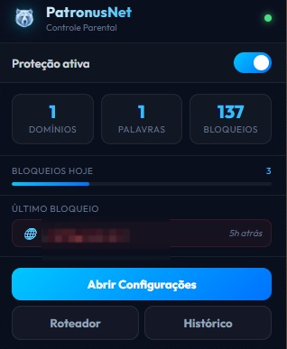

01
Bloqueio de sites
Defina domínios e conteúdos que devem ser bloqueados durante a navegação.
Uma extensão para navegadores Chromium desenvolvida para adicionar uma camada de controle, filtragem e proteção à experiência de navegação.

O PatronusNet Browser funciona como uma camada adicional de proteção no navegador, permitindo configurar regras e acompanhar a experiência de navegação de forma simples.
Recursos desenvolvidos para facilitar a configuração das políticas de proteção.
Defina domínios e conteúdos que devem ser bloqueados durante a navegação.
Utilize regras de moderação para auxiliar no controle do conteúdo acessado.
Defina períodos em que determinadas políticas de proteção devem permanecer ativas.
Interface organizada para configurar regras e visualizar o funcionamento da extensão.
Recurso experimental voltado para reduzir determinados sinais de identificação durante a navegação.
A arquitetura prioriza o processamento local sempre que possível, reduzindo a dependência de serviços externos.
O PatronusNet Browser utiliza as APIs disponibilizadas pelo ecossistema de extensões Chromium para integrar recursos de controle diretamente ao navegador.
Arquitetura compatível com navegadores baseados em Chromium.
Integração com recursos disponibilizados pelos navegadores compatíveis.
Lógica da extensão e gerenciamento das regras de proteção.
Conheça rapidamente a interface e alguns dos recursos disponíveis na extensão.
O PatronusNet prioriza o processamento local sempre que possível. A proposta é reduzir a necessidade de enviar informações de navegação para serviços externos e manter maior controle sobre os dados utilizados pela solução.
O PatronusNet Browser foi projetado para navegadores baseados no projeto Chromium.
Navegador principal para utilização da extensão.
Compatível com o ecossistema de extensões Chromium.
Compatibilidade pode variar conforme o navegador e suas APIs.
Adquira a extensão diretamente pela loja oficial do navegador compatível.